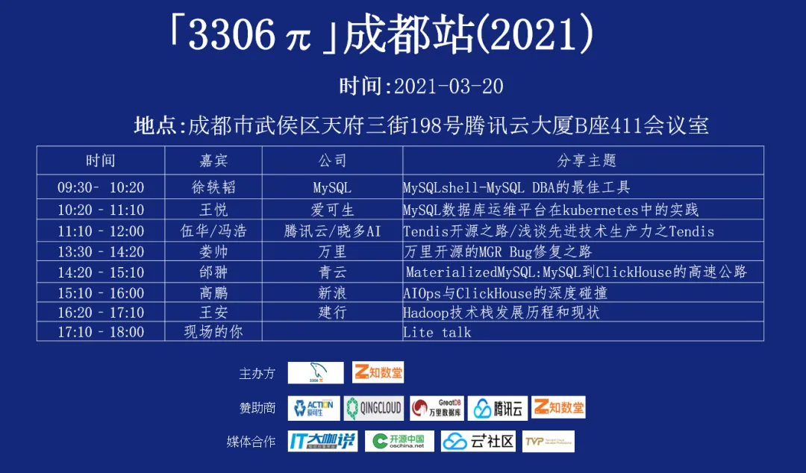

专访 | 3306π社区专访CTO娄帅，畅谈万里数据库的MGR Bug修复之路
近日，3306π社区2021年首场技术分享会将于3月20日在成都举办。因此，3306π社区特邀万里数据库CTO娄帅，就万里数据库开发团队对MGR Bug修复等相关技术问题进行了专题访谈，希望以他们的技术实践经验给广大技术开发者提供一些参考借鉴。
万里数据库CTO
娄帅
专注于分布式数据库研发领域
· 访谈大纲 ·
1、娄老师，很多朋友会疑问MySQL MGR是否可以完全代替传统主从架构，可否分享下您的观点？
2、请问娄老师，MySQL 8.0 MGR投入生产使用的话，有哪些使用姿势需要注意呢？
3、万里的MGR修复，业界关注度非常高，今年会开源一版吗？
4、请问娄老师，万里的MGR会一直合并官方新版本的功能吗？
5、娄老师可否简单介绍下万里数据库公司呢？
娄老师，很多朋友会疑问MySQL MGR是否可以完全代替传统主从架构，可否分享下您的观点？
MySQL Group Replication是MySQL很重要的一个方向，全同步复制也是必然趋势。是否使用MGR，需要用户根据自己的使用场景来确定哪一种方案更合适。
MGR的优势在于数据强一致，同时提供了consistency一致性级别，可以达到不同的读写备库的一致性级别。
对于副本强一致性要求并不高的场景，依然可以使用传统的异步、半同步复制方案。如果对数据安全性要求比较高，MGR是必然选择。
3306π：请问娄老师，MySQL 8.0 MGR投入生产使用的话，有哪些使用姿势需要注意呢？
娄帅：网络环境需要相对比较稳定，延迟较低。
尽量避免大事务出现，可以将大事务拆分成小事务。
目前官方版本AFTER级别下，暴露出来的问题相对较多，可以尽量避免使用AFTER级别。尽量不要使用多写模式，并不会带来线性的写性能提升。尽量使用单主模式，可以一写多读。
3306π：万里的MGR修复，业界关注度非常高，今年会开源一版吗？
娄帅：万里的MGR修复是为了贡献社区，我们首先会免费开放二进制版本，然后会开放源代码。
开源是必然的，只是目前还没确定一个具体的时间点。
3306π：请问娄老师，万里的MGR会一直合并官方新版本的功能吗？
娄帅：MySQL官方一般3个月会出一个小版本更新，目前我们是基于8.0.22版本进行的bug修复和改进。我们会一直合并官方的新版本的功能，但是可能不是每个小版本都跟进，可能存在跳跃式合并新版本功能的情况。
3306π：娄老师可否简单介绍下万里数据库公司呢？
万里数据库公司成立于2000年，是原中国MySQL研发中心，也是国内最早并且唯一参与国际主流数据库核心代码开发的厂商，专注数据库领域20年，以做中国最优秀的分布式数据库为目标。
娄帅：目前公司的主要产品GreatDB分布式版，在“2020-2021中国数字化年会”中荣膺“年度数据库创新产品奖”。它是一款NewSQL分布式关系型数据库软件，具有动态拓展、数据强一致、集群高可用等特性，目前已广泛应用于金融、能源、通信、政府、交通等多个行业的核心应用系统，历经500多个业务场景的锤炼，服务了国家电网、中国移动、中国石化、工商银行、光大银行等大型央企和国企。
近期，万里数据库先后中标中移动OLTP数据库联合创新项目、联通沃音乐大数据服务项目、国网信息通信产业集团框架采购项目等业内大型项目，发展势头迅猛，在业内树立了较高的认可度与口碑。
